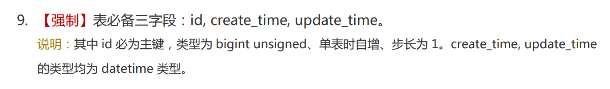

1. Is an Auto-Increment Primary Key Necessary in MySQL?
Sometimes we use a meaningful field as the primary key, such as using the username instead of a meaningless auto-increment id. One of the benefits of this approach is leveraging the uniqueness of the primary key to ensure the uniqueness of the username. If duplicate data is attempted to be inserted, the database will throw a “Duplicate entry * for key PRIMARY” error.
The problem with relying on this “benefit” is whether we can and should rely on the default characteristics of the primary key (non-repetitive fields) to meet our business needs (non-repetitive fields). In fact, “non-repetitive” is a feature of unique indexes, not the primary key. The primary key field will automatically have a unique index.
One of the inconveniences of leveraging this “benefit” is that the data table lacks a field that represents the “data row sequence.” Oracle has something like rownum, but MySQL does not, so you have to use a script to implement it. If you need to traverse the table in segments, it’s difficult to operate without the concept of rows.
The “Alibaba Java Development Manual” clearly requires tables to have an id field. They may not necessarily be right, but I believe their reasons must be sufficiently convincing.
2. Map or Bean
When querying data with MyBatis, the return type can be either List
The benefits of using a Bean are obvious. By entering the object name and pressing the next dot, IDEA will automatically pop up the Bean’s getter and setter methods, making the table’s properties clear at a glance. Whether getting or setting values, it is user-friendly.
One potential issue with using a Bean is if the table structure changes, such as deleting a field. Correspondingly, the Bean class would need to delete an attribute and its getter and setter methods. Any place in the program that uses this field will need to be modified. If not, the program will fail to compile.
We often encounter this situation during development. Debugging Class A, after changing a common COM class, BCDEF… all report errors during compilation. This is frustrating because I only want to confirm if the issue with Class A is caused by the COM class, but due to this dependency, I have to try other methods.
If facing system modifications, integration, or refactoring, Beans will also expose the same problems. In a recent project, to reuse as much of the original system as possible and make minimal changes, I had to use Bean.username to store the actual value of Bean.phoneNumber. All the various utility classes (encryption and decryption, local cache, etc.) of the original system depend on the Bean. Once involving Bean modifications, either a large-scale change is needed, or none at all.
Using a Map can slightly alleviate the issues brought by Beans, especially when handling value retrieval properly. For example, String.valueOf(map.get("")) can avoid the dreaded null pointer exception, allowing the program to start normally even if the value is null. The places needing changes can get and set as desired without being restricted by Bean getter and setter methods.
In addition, both Map and Bean are essentially encapsulations of properties.
3. Annotations or XML
Spring’s IOC supports both annotations and XML, and MyBatis SQL similarly supports both.
In the past, Java projects were often packaged into WAR or JAR files and run in containers like Tomcat or Resin. The container would automatically extract the package into class files and resource files, including XML. One advantage of using XML configuration is that you can directly modify the XML in the production environment and restart the project to complete the operation without recompiling Java files into class files, packaging, extracting, replacing, and going through the deployment process—branching, development, testing, compilation, deployment, merging baselines, step-by-step emails.
I think times have changed. With continuous integration, automated operations, properties, and YML, XML doesn’t seem as important anymore.
For MyBatis SQL, there is an internal XML parser. XML serves as a DSL to achieve dynamic SQL statements through configuration. If using annotations, writing SQL in the provider, we lose the XML parser’s functionality. However, losing this capability also grants us freedom. Facing string-based SQL statements, we can completely encapsulate our own parser.
Interestingly, foreign developers seem to prefer annotations, while domestic developers tend to use XML. Many foreign authors use annotations in their books, while most domestic blog articles use XML configuration in tutorials. This is somewhat similar to the situation with front-end frameworks React and Vue. Enterprises and developers with stronger technical skills prefer React because JSX is more like a programming language with more room for creativity. Vue is favored by enterprises and developers with weaker technical skills because it’s easier to get started and simpler to develop. If you’ve used Vue, you’ll understand that developing with it doesn’t feel like programming; it’s more like a product of software industrialization.